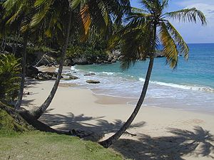
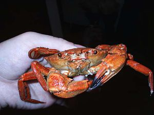
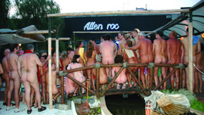
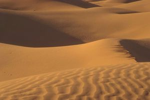

Playa
 De: La Frikipedia, la enciclopedia extremadamente seria.
De: La Frikipedia, la enciclopedia extremadamente seria.
Una playa es ese sitio lleno de arena y guiris donde la gente va a matar las horas muertas ya que se aburren debido a las vacaciones de verano.
 Una típica playa con sus palmeritas, sus olitas y toda la marimorena.
Formación de las playas
Una playa se forma cuando unos tipos llegan con camiones de arena y se dedican tranquilamente a echarla en el mar hasta que se forma una bonita playa que, oye, adorna un montón.
Nadie sabe cuándo, dónde, cómo o por qué lo hacen pero la mejor prueba de que de verdad lo hacen es que los guiris tienen un sitio donde meterse durante sus migraciones anuales.
Bichos que habitan las playas
 Típico ejemplo de fauna playera.
A continuación un completo recopilatorio de las formas de vida que pueden encontrarse en las playas:
Animales
- Cangrejos (posiblemente metido en la arena de justo debajo de tu trasero).
- Tiburones (posiblemente en el sitio donde te estás bañando).
- Medusas (posiblemente bajo tu pie).
- Chulo de playa (posiblemente cerca de tu novia).
Vegetales
- Algas (¡Diox! ¡Qué asco! ¡Son de esas verdes asquerosas!).
- Palmeras (perfectas para huir del chulo de playa (todo el mundo sabe que no pueden trepar)).
- Duchas (salen del suelo, ¿no? Entonces son vegetales).
Guiris
- Guiri n00b: el recién llegado, aun blanco como la leche.
- Guiri-cangrejo: el que ya lleva más tiempo y ha tenido tiempo de achicharrarse.
- Alemán salido: ¡Cuidado con estos!
Localización de las playas

Interesantes vistas de una playa.
Normalmente entre la tierra y el mar. Se pueden hallar en Málaga, Cádiz, Sevilla Galicia, Cantabria y Madrid (siento ésta la más larga del mundo (ya que de Madrid al mar hay un buen cacho)).
Estaciones
La playa se mueve con el ritmo de las estaciones. A continuación las veremos una por una:
- Primavera: los más impacientes no aguantan las ganas y se van a las playas... para descubrir que lo de que la primavera empieza el 21 de Marzo es un decir.
- Verano: con la migración anual de los guiris y los seres humanos las playas se abarrotan.
- Otoño: poco se sabe de las playas por estas fechas, algunos creen que desaparecen misteriosamente hasta el año próximo.
- Invierno: ¡¿A la playa en invierno?! ¡¿Tú estás loco?!
Actividades playeras
 Una playa como cualquier otra.
A continuación una lista de actividades típicamente playeras:
- Carrera suicida por encontrar sitio.
- Tiro a la abuela.
- Recoger medusas con las manos.
- Acariciar a los tiburones.
- Subirse a una palmera y saltar haciendo un salto mortal.
- Jugar al furbo (esto no varía ni en verano).
- Jugar al voley-playa.
- Subir a las chavalas y que te pongan el... ejem (!!!)... en la nuca.
- Etc.
Castillos de arena
Artículo principal: Castillo de Arena
Pero por supuesto la actividad más emblemática de las playas es sin duda la de construir castillos de arena. No hay nada mejor que pasarte dos horas haciendo una reproducción a escalas del palacio de versalles para que luego llegue el típico gilipollas despistado de turno y te lo joda pisándolo, con un palo, de un balonazo, etc.
Kit del playero compulsivo

Los hay que prefieren la bañera al mar.
Esto es lo que pasa si no vas a menudo a la playa.
Cosas que un playero jamás debería olvidar:
- Bañador
- Bañador de recambio
- Cerveza fría
- Neverita para llevar la cerveza
- Pala de plastico
- Cubo de plastico
- Toalla
- Hamaca
- Sombrilla (o paraguas grandote)
- Kit de submarinismo (para mirar piernas bajo el agua)
- Bocadillos (preferiblemente de arena)
- Crema bronceadora
- Un tocho infumable(para leer (se entiende (¿o no?)))
¿Sabías que...
 Extraño caso de playa sin mar.
- ...las playas están entre la tierra y el mar?
- ...eso no siempre es así?
- ...en verano hay un 99% de posibilidades de ver ano?
- ...tú sabes donde hay un playa?
- ...yo también?
- ...él lo mismo?
- ...todo eso no lo sabías?
Autor(es):
- Khazike Khashondo
- Kojakilo
Frikipedia 2005-2016, Licencia
GFDL 1.2 - Extraído por FrikiLeaks